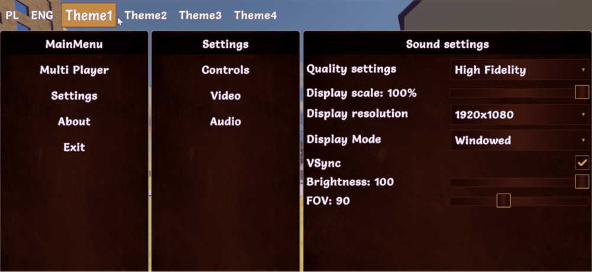

Themes

Introduction
Each game should have at least one theme so theming is required, but if you won't use themes then you will have to use the default built in theme. The default theme will not change your style. It is the empty theme for filling requirment.
It is strongly recommended to use at least one theme to style your screen.
How to use
To use themes you have to create an abstract base class that extends ICmThemeBase interface like this:
public abstract class MyExampleTheme : CmThemeBase
{
public abstract CmButtonModifiers StyleButton(CmButton button);
}
MyExampleTheme class will be passed as a generic argument to:
- screen manager: CmScreenManager\<MyExampleTheme> more about here in screen_manager section.
- screens: CmScreen\<MyExampleTheme> here in screen section.
- (optionally) screen part: CmScreenPart\<MyExampleTheme> here in screen_part section.
The next thing to do is to create your implementation for this theme that will contain styling code for example CmButton control.
We will style the button with modifiers - please read about the modifiers here in modifiers section.
public class MyThemeWhite : MyExampleTheme
{
public override CmButtonModifiers StyleButton(CmButton button)
{
// each controls has its own set of methods to style. We will get style interface for this button
// image have other group of function, than for example text. We use different interface for styling different controls
// Because we don't want to style font for image - it has no sense
// so get modifiers for styling
var modifiers = CmButton.GetModifiersBuilder();
// style with modifiers
modifiers.Button(
// change background color and textfont size for the button in default state, so not for state like mouse hover over control or disabled state. Default state is for all states for control, but if you add styles for mouse hover then it will override this styles while mouse is hovering otherwise it will use default modifiers.
new CmModifierText(CmSelector.DEFAULT_STATE)
.BackgroundColorRGBA(Color.white)
.TextFontSize(30.px())
);
}
return modifiers;
}
}
optionally you can create a second theme like this (as an example)
public class MyThemeBlack : MyExampleTheme
{
public override CmButtonModifiers StyleButton(CmButton button)
{
var modifiers = CmButton.GetModifiersBuilder();
modifiers.Button(
new CmModifierText(CmSelector.DEFAULT_STATE)
.BackgroundColorRGBA(Color.black)
);
return modifiers;
}
}
As you can see we have two themes MyThemeWhite and MyThemeBlack.
These themes you will have to add to the screen manager, so that it will know when you will set your current theme that it is one of themes for your screens.
IMPORTANT NOTE TO UNDERSTAND how it works:
UI Toolkit works in a way that you will create uss files and assign them to your controls and the similar thing is with CoDriven Advanced UI tool.
You will have to add all your styling to methods in your base theme MyExampleTheme class to style your controls, or create abstract methods there and override it in your theme implementation classes like MyThemeWhite and MyThemeBlack, because the engine will loop through all your public methods in your base theme or in your implementations and will generate uss files for all of these methods. Then when you pass GetTheme().StyleButton method adress to SetStyle method of your control it will assign runtime your uss style generated during editor pass.
So lets add these themes to our screen manager.
// IMyExampleTheme is a base theme interface
public class MyScreenManager : CmScreenManager<MyExampleTheme>
{
...
//This is called by the system to add themes to the list
public override void OnAddSupportedThemes(List<MyExampleTheme> themes)
{
//Add all themes here for this screen manager
themes.Add(new MyThemeWhite());
themes.Add(new MyThemeBlack());
}
...
}
and now you can use themes in your screens, or change current theme in runtime. More about screen manager here in screen_manager section.
You will use the theme in part of your code responsible for creating controls. Here is some fragment of your CmScreen - remember this is not CmScreenManager but CmScreen:
// code for creating button with a style from your theme method StyleButton()
public CmButton createMainButton(string buttonTitle)
{
// Create a simple button with buttonTitle and UI event handler from this screen to handle events in this screen
var button = new CmButton(buttonTitle, cmUIEventsHandler: GetCmUiEventsHandler());
//Get the current assigned theme to this screen and use your function to style this button
//This theme could be one of your added themes: MyThemeWhite, MyThemeBlack
button.SetStlye(GetTheme().StyleButton);
return button;
}
Now you know how to add a theme and use it.
Time to read more about CmScreenManager, CmScreen, and CmScreenPart